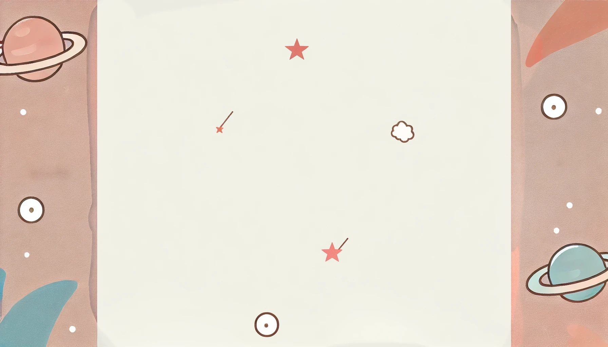
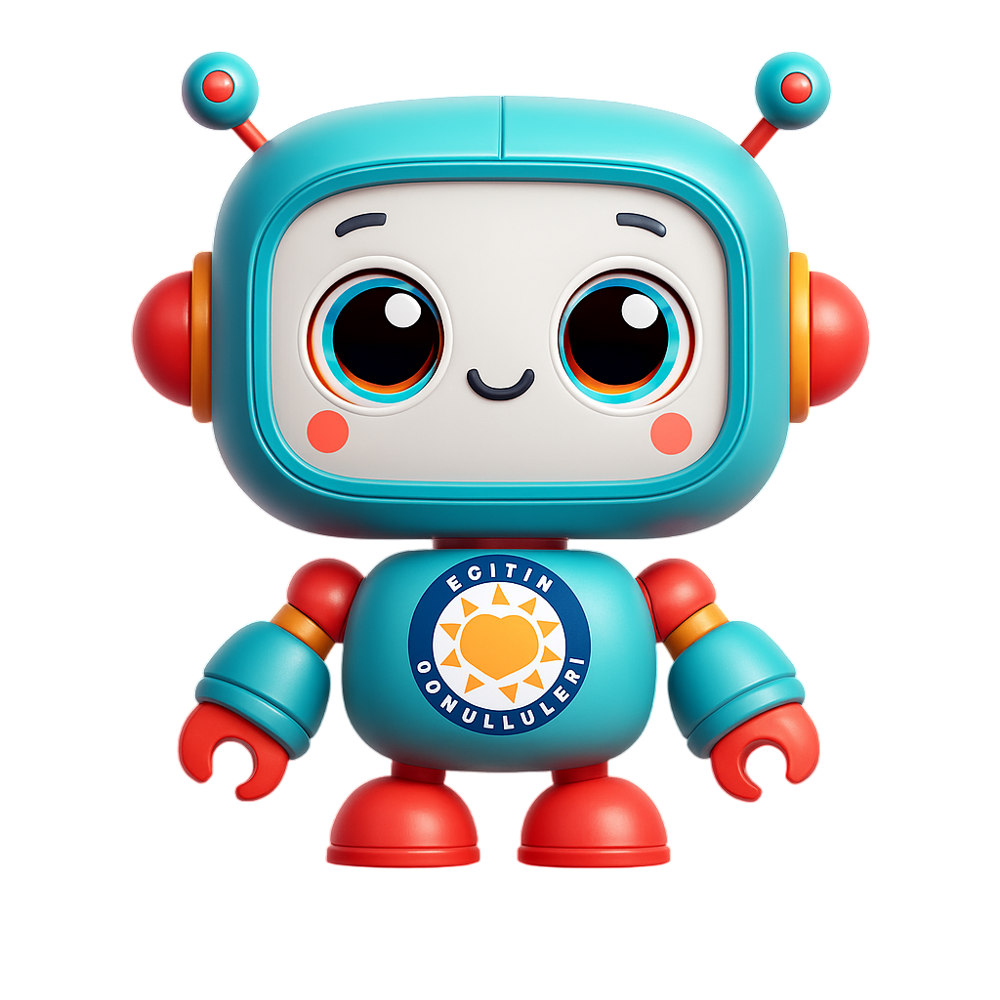
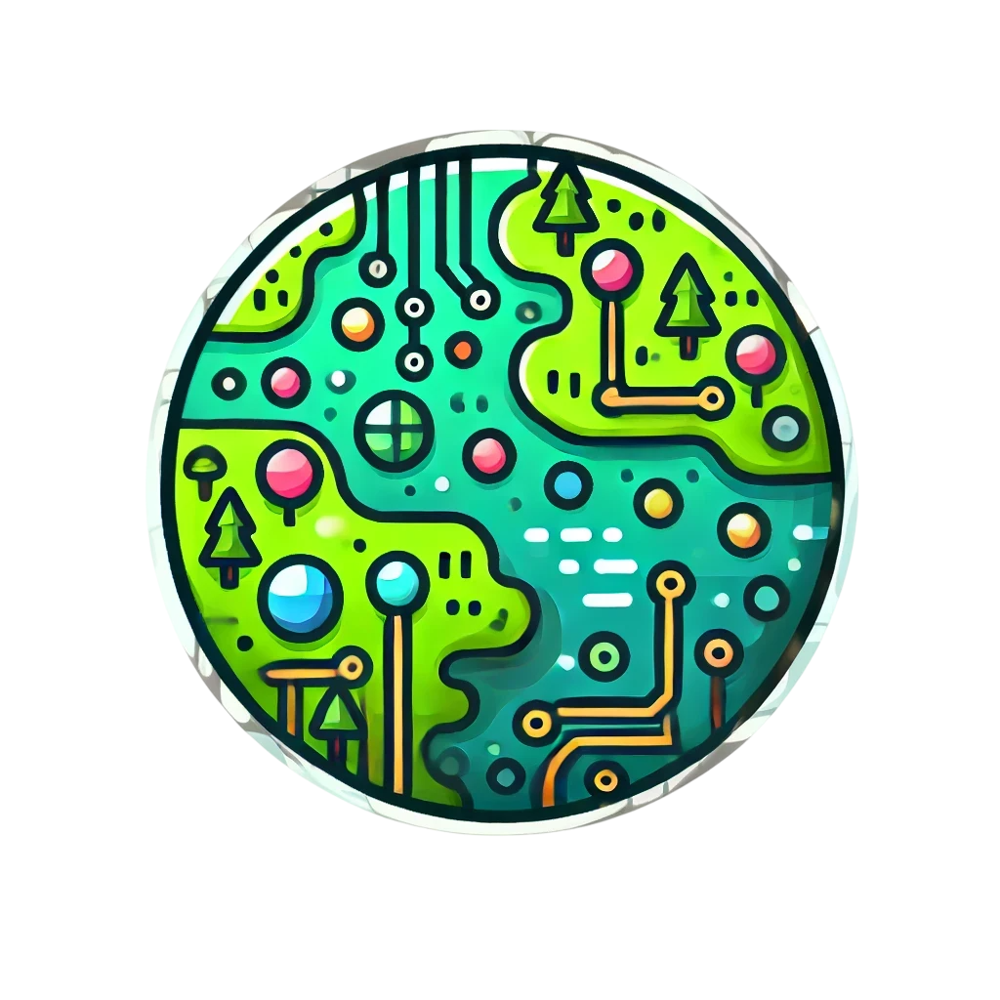
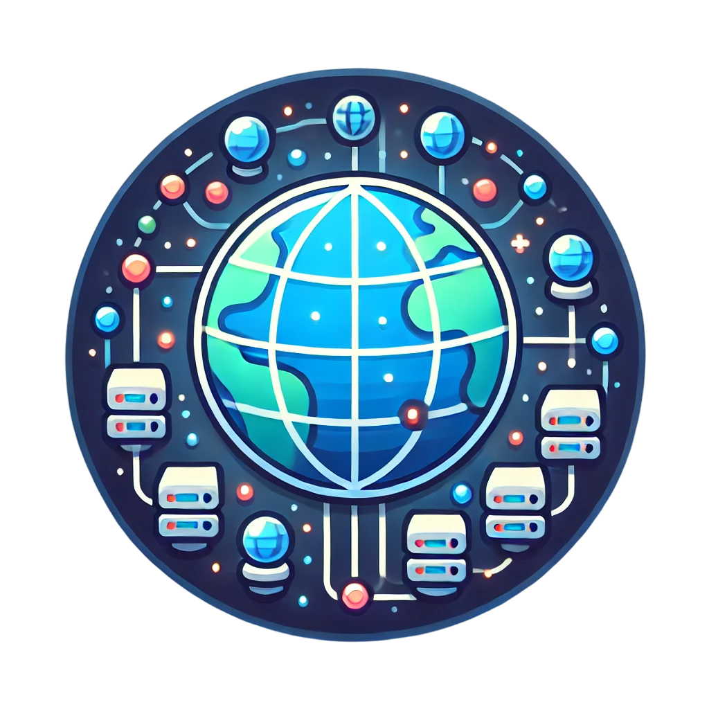
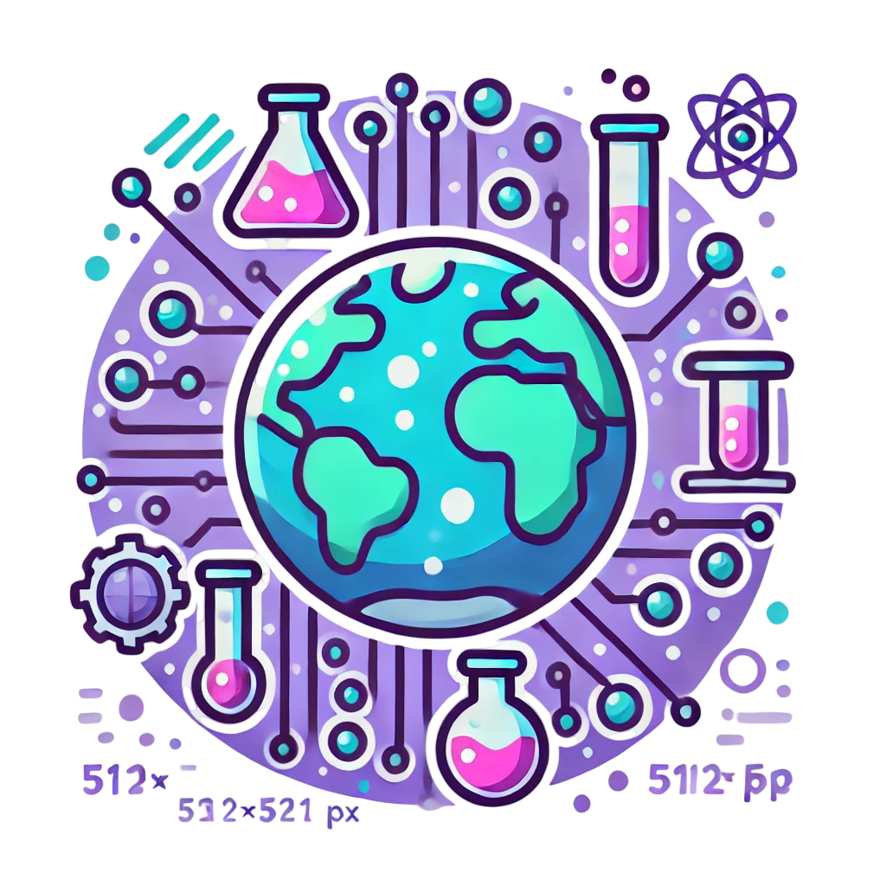
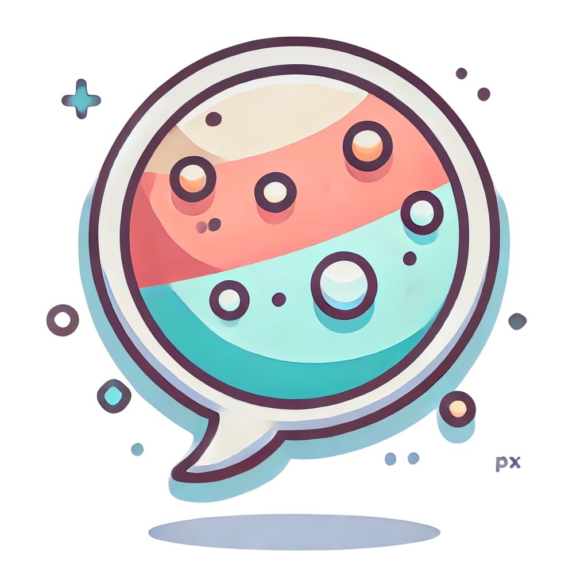
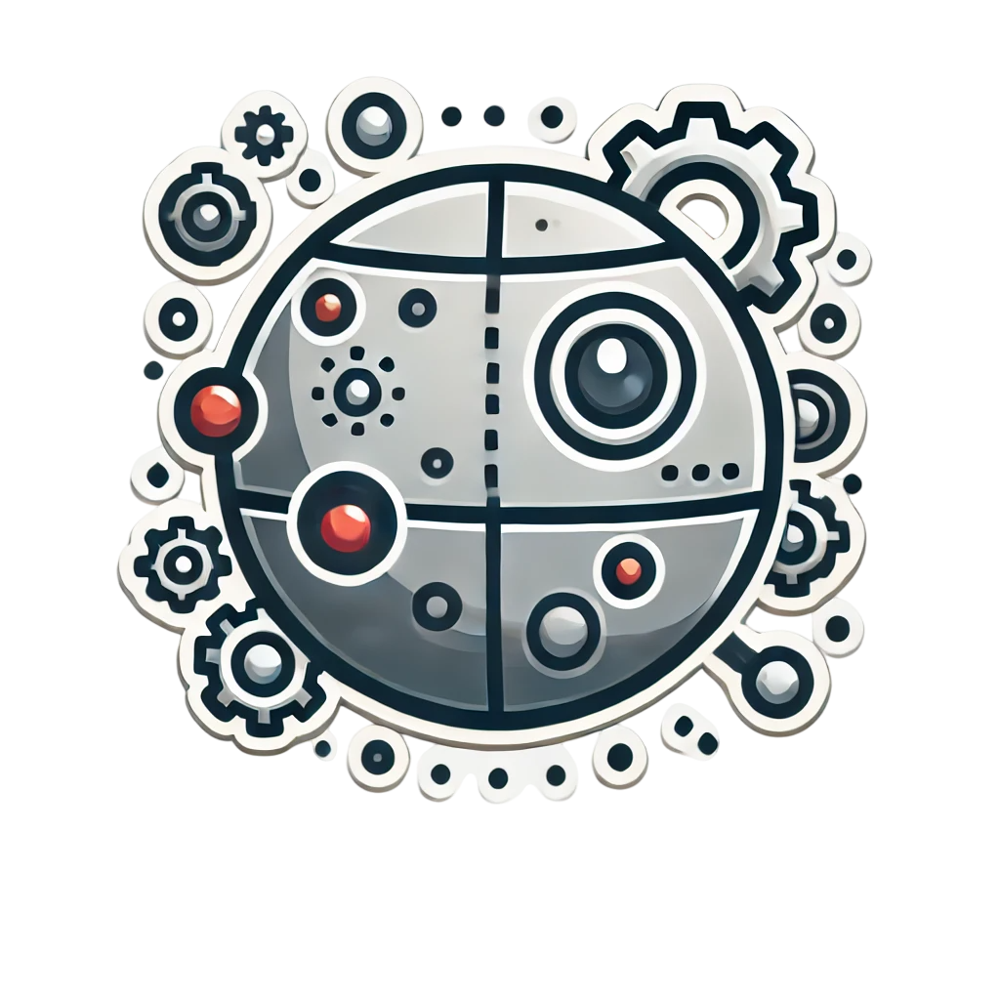
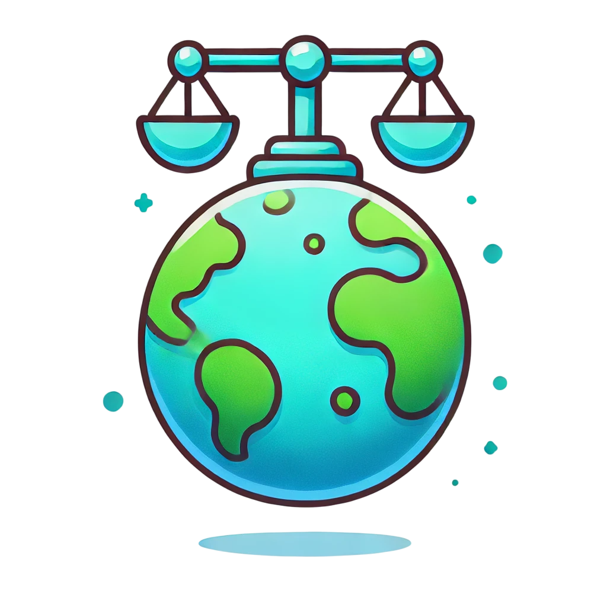

Merhaba cesur kâşif! Ben tegvBot,
Yapay Zeka Evreni'nin sevimli rehberi.
Bu evrende işler yolunda gitmiyor:
Veri merkezleri dağılmış, algoritma ormanında hatalar oluşmuş,
robotik atölyesinde tuhaf arızalar çıkmış!
Altı mini-gezegene uğrayacağız; her birinde
yapay zekânın farklı bir yönünü öğrenip
5 eğlenceli bulmacayı çözeceğiz.
Hadi, gezegenleri eski haline döndürelim ve harika maceraya başlayalım!


Gezegen Seçimi
6 gezegen var. Her birinde 5 bulmaca seni bekliyor. Bir gezegeni bitirince tekrar giremezsin.

Algoritma Ormanı Gezegeni

Veri Yükleme Gezegeni

Makine Öğrenimi Gezegeni

Doğal Dil İşleme Gezegeni

Robotik Atölyesi Gezegeni

Etik Yapay Zeka Gezegeni
Tebrikler!
Yapay Zeka Evreni'nin tüm mini-gezegenlerini kurtardın! Harika bir iş çıkardın.